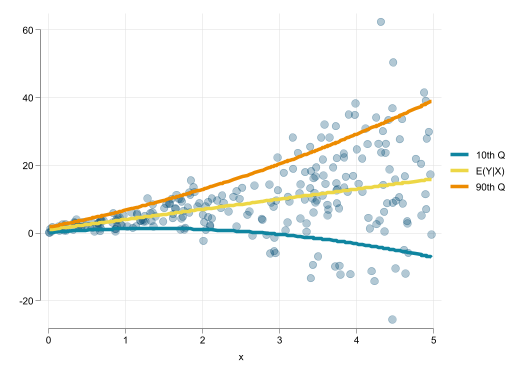
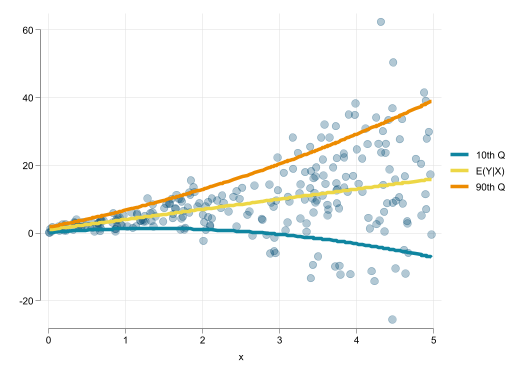
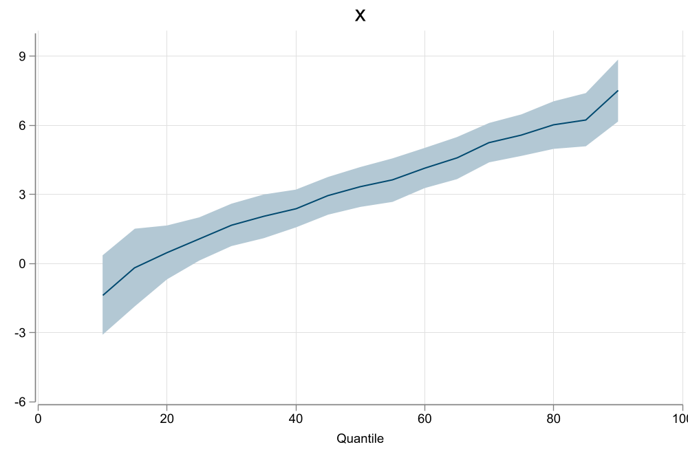
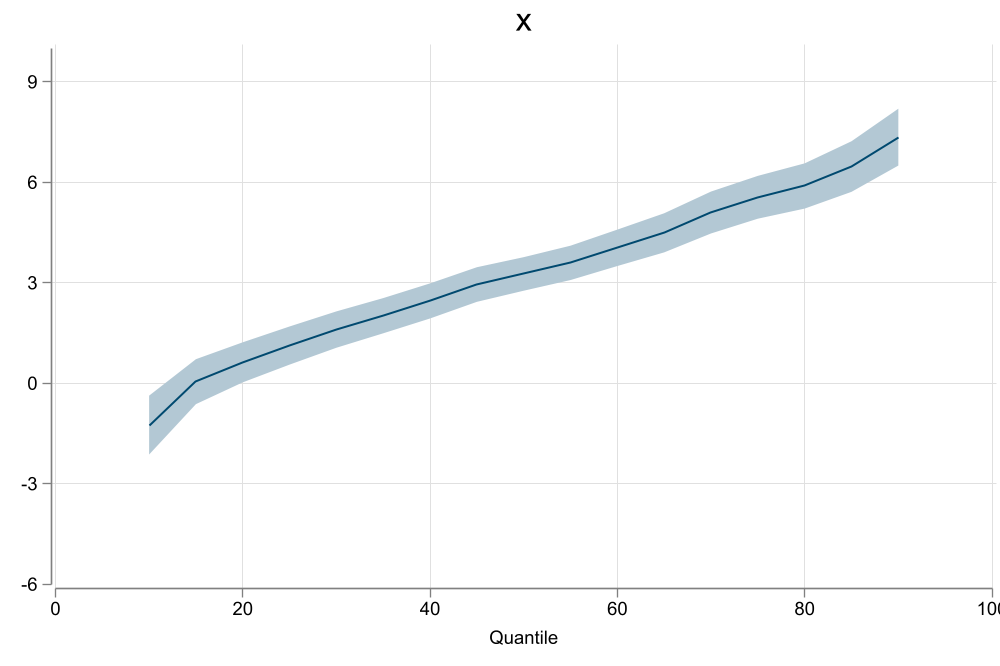
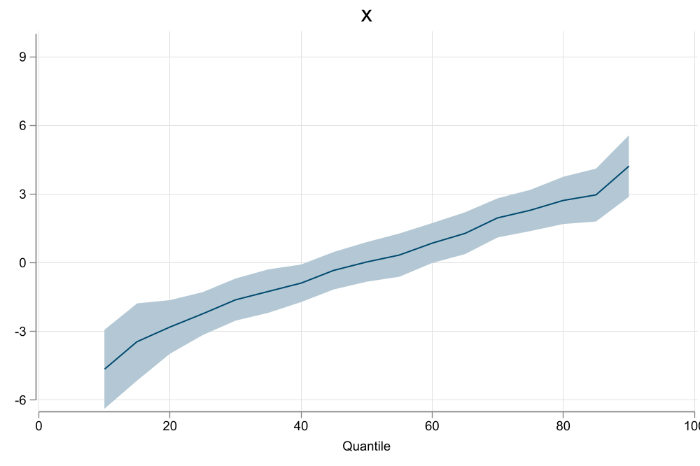
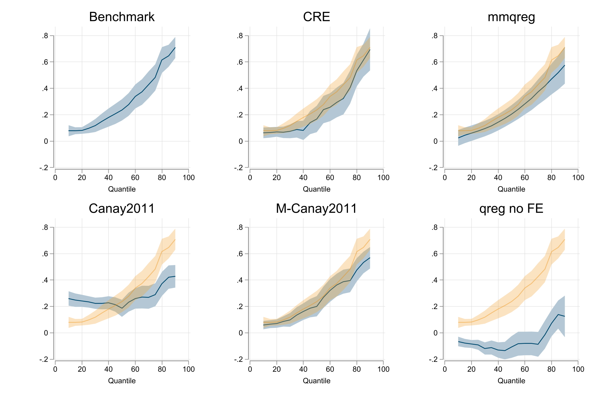

Number of observations (_N) was 0, now 250.
A Method of Moments Approach
Fernando Rios-Avila
Gustavo Canavire-Bacarreza
Leonardo Siles
Quantile Regressions are an alternative to standard linear regressions that help us to better understand the relationship between the distribution of \(Y\) and \(X's\).
In constrast with Linear regression models, where one focuses on explaining \(E(y|X)\) as a function of \(X\), quantile regressions aim to assess the relationship between \(Q_\tau(y|X)\) with respect to \(X\).
Quantile Regressions are nonlinear-models, that “look” and can be interpreted as linear ones.
Number of observations (_N) was 0, now 250.
\[y_i = \beta_0(\tau)+\beta_1(\tau) X_{i,1}+\beta_2(\tau) X_{i,2}+...+\beta_k(\tau) X_{i,k} \]
Base on this specification, few characteristics should be considered:
Standard
\[\beta(\tau) \leftarrow \frac 1 n \sum \left[ I(x_i\beta(\tau) \geq y_i) - \tau \right] =0 \]
Semiparamatric (Kaplan (2022))
\[\beta(\tau) \leftarrow \frac 1 n \sum \left[ F\left(\frac{x_i\beta(\tau)-y_i}{bw} \right) - \tau \right] =0 \]
Functional (Bottai and Orsini (2019))
\[\beta(\tau) = \theta_0 + \theta_1 \tau + \theta_2 \tau^2 +... \]
Location-Scale \[\beta(\tau) = \beta + \gamma(\tau) \]



\[Q_\tau(y|x) = \beta_0(\tau) + \beta_1 X(\tau) + \sum \delta(\tau)_g \]
This creates an incidental parameter problem. Neither \(\delta(\tau)'s\) nor \(\beta's\) would be consistently estimated.
Koenker (2004): Assume Fixed effects only have an impact on Location, and Shrink invidual effects (LASSO) \[y_i = \beta(\tau)X + \delta_g \]
Canay (2011): Similar to Koenker (2004), but “eliminate them” before running Qreg
\[\begin{aligned} y = \beta X + \delta_g + e \\ Q_\tau(y - \delta_g|X) = \beta(\tau)X \end{aligned} \]
Abrevaya and Dahl (2008): Correlated Random effects Model \[Q_\tau(y|X) = \beta(\tau)X + \gamma(\tau) E(X|g)\]
This method was developed (and implemented using xtqreg) to incorporate individual fixed effects (Useful when considering panel data)
In principle its an extension of He (1997), who proposed an strategy to estimate Qreg coefficients using a restricted location-scale model, assuming the following structure: \[y_i = X_i\beta + \varepsilon X_i\gamma \]
Thus, Quantile regression model is given by:
\[Q_\tau(y|X)=X\left(\beta + F^{-1}_\varepsilon(\tau) \gamma \right) = X \beta(\tau) \]
Instead of requiring \(K\times M\) coefficients to identify the whole conditional distribution, it only requires \(2\times K + M\).
Also, Quantile curves will not cross!
\[y_i = x_i \beta + \varepsilon x_i \gamma \rightarrow Q_\tau(y|X)=X\beta + X\gamma F_\varepsilon^{-1}(\tau) \]
Machado and Santos Silva (2019) propose an extension: To add a single set of fixed effect (panel) apply Frisch–Waugh–Lovell theorem.
This can be extended to controlling for multiple fixed effects:
\[\tilde w_i = w_i +\bar w - \delta^w_{g1} - \delta^w_{g2} - ... - \delta^w_{gk} \ \forall \ w \in y,x \]
And use almost the same moments as before:
\[\begin{aligned} E(\tilde X(\tilde y-\tilde X\beta)) & =0 \\ E(\tilde X(|\tilde y- \tilde X\beta|-\tilde X\gamma)) &=0 \\ X\gamma + \delta's &= y - (\tilde y- \tilde X\gamma) \\ E\left[ I\left( \frac{\tilde y- \tilde X\beta}{X\gamma+ \delta's } \geq q_\tau \right) -\tau \right] &=0 \end{aligned} \]
Along with the modified algorithm that allows for Panel Fixed effects, Machado and Santos Silva (2019) proposed a GLS type variance estimator.
How does this work?
Consider the location model: \(y_i = x_i \beta + \varepsilon_i x_i \gamma\)
Which has known heteroskedasticity: \(Var(y_i - x_i\beta)=(x_i\gamma)^2 \sigma^2_\varepsilon\)
Machado and Santos Silva (2019) GLS Variance would be: \[\begin{aligned} e &= y_i - X\beta = \varepsilon_i x_i \gamma\\ Var(\hat\beta) &= (X'X)^{-1}\sum x_i x_i' \color{red}{e_i^2} (X'X)^{-1} \\ &=\color{red}{\sigma_\varepsilon^2} (X'X)^{-1} \sum x_i x_i' \color{red}{(x_i'\gamma)^2} (X'X)^{-1} \end{aligned} \]
However, this can be sensitive to the modeling of the Scale function.
But one can almost always Bootstrap…
An extension offered in my implementation makes full use of the moment conditions, and the implicit Influence functions: \[\begin{aligned} IF'_{i,\beta} &= N(X'X)^{-1} x_i R_i \\ IF'_{i,\gamma} &= N(X'X)^{-1} x_i \Big( \tilde R_i -x_i'\gamma \Big) \\ \color{blue}{IF_{i, q(\tau)}} &= \frac{\tau -I(q_\tau \geq \varepsilon_i) }{f_\varepsilon(q_\tau)} - \frac{R_i}{\bar x'\gamma} - q_\tau \frac{\tilde R_i -x_i'\gamma}{\bar x'\gamma}\\ R_i &= y_i-x_i'\beta \\ \tilde R_i & =2 R_i \big[1(R_i \geq 0) - E(1(R_i \geq 0)) \big] \end{aligned} \]
So we just stack Influence functions to obtain Robust and Clustered Standard errors:
Robust SE \[Var_r(\beta,\gamma,q_\tau) = \frac{1}{N^2} \left[ \begin{matrix} IF_\beta & IF_\gamma & IF_{q_\tau} \end{matrix} \right]'\left[ \begin{matrix} IF_\beta & IF_\gamma & IF_{q_\tau} \end{matrix} \right] \]
Cluster SE
\[Var_c(\beta,\gamma,q_\tau) = \frac{1}{N^2} \left[ \begin{matrix} SIF_\beta & SIF_\gamma & SIF_{q_\tau} \end{matrix} \right]'\left[ \begin{matrix} SIF_\beta & SIF_\gamma & SIF_{q_\tau} \end{matrix} \right] \] \[SIF_{w} = \left[ \begin{matrix} SIF_{g=1,w} \\ SIF_{g=2,w} \\ ... \\\ SIF_{g=G,w} \end{matrix}\right] \& SIF_{g=k, \ w} = \sum_{i \in g=k} IF_{i,w} \]
Easily allows for simultaneous Qregressions and weights
mmqregmmqreg depvar indepvar [if in] [pw] , [Options] <-- Standard Syntax
** Variance Options
Default: MSS(2019) GLS SE
-robust-: Robust Standard errors, no DOF Correction (GMM)
-cluster(varname)-: Clustered Standard errors, no DOF Correction (GMM)
-dfadj-: Simple Adjustment (n-k-1)
** Output
- q(numlist): List of Quantiles to be estimated (default q=50)
- ls : Request Providing Location Scale coefficient modelsThere will be some differences with xtqreg because of couple of differences in the math and programming.
webuse nlswork, clear
qui:mmqreg ln_w age ttl_exp tenure not_smsa south, ///
abs(idcode)
est sto m1
qui:mmqreg ln_w age ttl_exp tenure not_smsa south, ///
abs(idcode) robust
est sto m2
qui:mmqreg ln_w age ttl_exp tenure not_smsa south, ///
abs(idcode) cluster(idcode)
est sto m3
qui:mmqreg ln_w ttl_exp tenure not_smsa south, ///
abs(idcode age) cluster(idcode)
est sto m4
esttab m1 m2 m3 m4, se nomtitle nogap (National Longitudinal Survey of Young Women, 14-24 years old in 1968)
----------------------------------------------------------------------------
(1) (2) (3) (4)
----------------------------------------------------------------------------
qtile
age -0.00270** -0.00270** -0.00270*
(0.000868) (0.000890) (0.00127)
ttl_exp 0.0292*** 0.0292*** 0.0292*** 0.0341***
(0.00178) (0.00153) (0.00225) (0.00229)
tenure 0.0108*** 0.0108*** 0.0108*** 0.0102***
(0.00191) (0.000989) (0.00145) (0.00144)
not_smsa -0.0925*** -0.0925*** -0.0925*** -0.0880***
(0.00974) (0.0104) (0.0140) (0.0138)
south -0.0640*** -0.0640*** -0.0640*** -0.0599***
(0.0116) (0.0121) (0.0167) (0.0167)
_cons 1.611*** 1.611*** 1.611*** 1.490***
(0.0564) (0.0194) (0.0276) (0.0146)
----------------------------------------------------------------------------
N 28093 28093 28093 28093
----------------------------------------------------------------------------
Standard errors in parentheses
* p<0.05, ** p<0.01, *** p<0.001sysuse auto, clear
qui:mmqreg price mpg trunk ,
est sto m1
qui:mmqreg price mpg trunk , robust
est sto m2
qui:bootstrap, reps(250):mmqreg price mpg trunk
est sto m3(1978 automobile data)
------------------------------------------------------------
(1) (2) (3)
default Robust Bootstrap
------------------------------------------------------------
qtile
mpg -172.7 -172.7*** -172.7*
(38416.1) (44.85) (71.63)
trunk 33.67 33.67 33.67
(50437.7) (49.04) (56.11)
_cons 8457.3 8457.3*** 8457.3***
(1454004.1) (1617.9) (2303.5)
------------------------------------------------------------
N 74 74 74
------------------------------------------------------------
Standard errors in parentheses
* p<0.05, ** p<0.01, *** p<0.001In this presentation I present a quick review of quantile regressions, with emphasis on solutions for adding fixed effects.
The Location and Scale model help with the problem because it reduces the number of coefficients to needed to be estimated for consistent estimates.
While the model may be restrictive (multiplicative heteroskedasticity) it may still be useful for exploration, and analysis when other methodologies are not feasible.
cre: For Correlated Random Effects Modelfrom -fra install-
syntax:
cre, abs(varlist) [keep compact]: [regression command]
- a prefix command. Gathers all controls and obtains conditional means
based on FE groups
- Adds them to model specification, and estimates the model.
- SE should be accounted for in the command.
** Example
cre, abs(idcode):qreg ln_w age ttl_exp tenure not_smsa south, ///
cluster(idcode)clear
set seed 101
set obs 5000
gen g = runiformint(1,250)
gen rnd1 = rchi2(4)/4
gen rnd2 = rchi2(4)/4
gen rnd3 = rchi2(4)/4 - 1
bysort g:gen fe = rnd1[1]
bysort g:gen fe2 = rnd1[2] + fe
bysort g:gen x1 =2 - fe + rchi2(4)/4
bysort g:gen x2 = fe + rnd2[1]
gen tau = runiform()
gen y = 2+ tau + log(tau) + tau^2 * x1 - log(tau) * x2 + 2*tau*fe2
qreg y x1 x2 fe2
qregplot x1, name(m1, replace) title(Benchmark) graphregion( margin(r=5)) estore(ss)
est restore ss
matrix qq=e(qq)
matrix bb=e(bs)
matrix ll=e(ll)
matrix uu=e(ul)
svmat qq
svmat bb
svmat ll
svmat uu
cre , abs(g) keep: qreg y x1 x2
qregplot x1, name(m2, replace) title(CRE) graphregion( margin(r=5))
addplot : rarea ll1 uu1 qq1, color(%30) lcolor(%0) pstyle(p4) || line bb1 qq1 , color(%40) pstyle(p4)
mmqreg y x1 x2, abs(g)
qregplot x1, name(m3, replace) title(mmqreg) graphregion( margin(r=5))
addplot : rarea ll1 uu1 qq1, color(%30) lcolor(%0) pstyle(p4) || line bb1 qq1 , color(%40) pstyle(p4)
reghdfe y x1 x2, abs(fex=g)
gen y2 = y-fex
qreg y2 x1 x2
qregplot x1, name(m4, replace) title(Canay2011) graphregion( margin(r=5))
addplot : rarea ll1 uu1 qq1, color(%30) lcolor(%0) pstyle(p4) || line bb1 qq1 , color(%40) pstyle(p4)
qreg y x1 x2 fex
qregplot x1, name(m5, replace) title(M-Canay2011) graphregion( margin(r=5))
addplot : rarea ll1 uu1 qq1, color(%30) lcolor(%0) pstyle(p4) || line bb1 qq1 , color(%40) pstyle(p4)
qreg y x1 x2
qregplot x1, name(m6, replace) title(qreg no FE) graphregion( margin(r=5))
addplot : rarea ll1 uu1 qq1, color(%30) lcolor(%0) pstyle(p4) || line bb1 qq1 , color(%40) pstyle(p4)
graph combine m1 m2 m3 m4 m5 m6, col(3) ycommon nocopies
graph export fig99.png, width(2000) replace
---
title: "Quantile regressions with multiple fixed effects"
subtitle: "A Method of Moments Approach"
author:
- Fernando Rios-Avila
- Gustavo Canavire-Bacarreza
- Leonardo Siles
format:
html:
code-fold: true
code-overflow: wrap
echo: false
css: styles.css
highlight-style: github
bibliography: refer.bib
jupyter: nbstata
---
# Introduction
## What do Quantile Regressions do?
- Quantile Regressions are an alternative to standard linear regressions that help us to better understand the relationship between the distribution of $Y$ and $X's$.
- In constrast with Linear regression models, where one focuses on explaining $E(y|X)$ as a function of $X$, quantile regressions aim to assess the relationship between $Q_\tau(y|X)$ with respect to $X$.
- This means that to interpret Q-regressions properly, one needs to "condition" on $X$ but also on $\tau$.
- Quantile Regressions are nonlinear-models, that "look" and can be interpreted as linear ones.
##
```{stata}
clear
set obs 250
gen x = runiform(0,5)
gen p = runiform()
gen y = 2*p + (3+invnormal(p)) *x + (0.5*invnormal(p)) *x ^2
set scheme white2
color_style bay
local p 0.1
gen yq1 = 2*`p' + (3+invnormal(`p')) *x +(0.5*invnormal(`p')) *x ^2
local p 0.5
gen yq5 = 2*`p' + (3+invnormal(`p')) *x +(0.5*invnormal(`p')) *x ^2
local p 0.9
gen yq9 = 2*`p' + (3+invnormal(`p')) *x +(0.5*invnormal(`p')) *x ^2
two (scatter y x, msize(3) mcolor(%30) ) ( line yq1 yq5 yq9 x, sort pstyle(p2 p3 p4) lw(1 1 1)), ///
legend(order( 2 "10th Q" 3 "E(Y|X)" 4 "90th Q"))
```
## Estimation
- A Generalization of Quantile regression data generating function can be written as follows:
$$y_i = \beta_0(\tau)+\beta_1(\tau) X_{i,1}+\beta_2(\tau) X_{i,2}+...+\beta_k(\tau) X_{i,k}
$$
- Base on this specification, few characteristics should be considered:
1. Slopes $\beta_k(\tau)$ will vary across quantiles only if the model is Heteroskedastic.
2. Qreg can be considered as a semi-parametric-varying coefficient model, with unobserved running variable ($\tau$).
3. Coefficients are percentile specific, but functional forms can be used for more efficient estimation.
4. It is possible to separate location effects (mean) from scale effect (deviation from the mean)
##
**Standard**
$$\beta(\tau) \leftarrow \frac 1 n \sum \left[ I(x_i\beta(\tau) \geq y_i) - \tau \right] =0
$$
**Semiparamatric** (@kaplan2022)
$$\beta(\tau) \leftarrow \frac 1 n \sum \left[ F\left(\frac{x_i\beta(\tau)-y_i}{bw} \right) - \tau \right] =0
$$
**Functional** (@bottai2019)
$$\beta(\tau) = \theta_0 + \theta_1 \tau + \theta_2 \tau^2 +...
$$
**Location-Scale**
$$\beta(\tau) = \beta + \gamma(\tau)
$$
##
```{stata}
*| output: false
qui:qreg y x
qregplot, ylabel(-6 (3) 10)
graph export fig91.png, replace width(1000)
qui:sivqr y x, q(50)
qregplot, ylabel(-6 (3) 10)
graph export fig92.png, replace width(1000)
qui:reg y x
qui:predict yh
qui:gen dy = y - yh
qui:qreg dy x
qregplot, ylabel(-6 (3) 10)
graph export fig93.png, replace width(1000)
```
:::{.panel-tabset}
## qreg
{heigth=100% fig-align=center}
## sivqr
{heigth=100% fig-align=center}
## Location-Scale
{heigth=100% fig-align=center}
:::
# The Problem
## How to account for fixed effects?
- As said before, quantile regresions are nonlinear models. Thus, one cannot just add Dummies to address group fixed effects
$$Q_\tau(y|x) = \beta_0(\tau) + \beta_1 X(\tau) + \sum \delta(\tau)_g
$$
This creates an incidental parameter problem. Neither $\delta(\tau)'s$ nor $\beta's$ would be consistently estimated.
- But then how to solve it?
## Some Solutions
**@koenker2004**: Assume Fixed effects only have an impact on Location, and Shrink invidual effects (LASSO)
$$y_i = \beta(\tau)X + \delta_g
$$
**@canay2011**: Similar to @koenker2004, but "eliminate them" before running Qreg
$$\begin{aligned}
y = \beta X + \delta_g + e \\
Q_\tau(y - \delta_g|X) = \beta(\tau)X
\end{aligned}
$$
**@Abrevaya2008**: Correlated Random effects Model
$$Q_\tau(y|X) = \beta(\tau)X + \gamma(\tau) E(X|g)$$
## @mss2019
- This method was developed (and implemented using `xtqreg`) to incorporate individual fixed effects (Useful when considering panel data)
- In principle its an extension of @he2019, who proposed an strategy to estimate Qreg coefficients using a restricted location-scale model, assuming the following structure:
$$y_i = X_i\beta + \varepsilon X_i\gamma
$$
Thus, Quantile regression model is given by:
$$Q_\tau(y|X)=X\left(\beta + F^{-1}_\varepsilon(\tau) \gamma \right) = X \beta(\tau)
$$
- Instead of requiring $K\times M$ coefficients to identify the whole conditional distribution, it only requires $2\times K + M$.
- Also, Quantile curves will not cross!
## How does Simplified @he2019 and @mss2019 works?
$$y_i = x_i \beta + \varepsilon x_i \gamma \rightarrow Q_\tau(y|X)=X\beta + X\gamma F_\varepsilon^{-1}(\tau)
$$
#### Step 1: Location model $E(X'(y-X\beta))=0$
#### Step 2: Scale model $E(X'(|y-X\beta|-X\gamma))=0$
#### Step 3: Standardized Quantile $E\left[ I\left( \frac{y-X\beta}{X\gamma} \geq q_\tau \right) -\tau \right]=0$
#### Step 4: Aggregate $\beta(\tau) = \beta + q_\tau \gamma$
## Extension: Multiple Fixed effects
@mss2019 propose an extension: To add a single set of fixed effect (panel) apply Frisch–Waugh–Lovell theorem.
This can be extended to controlling for multiple fixed effects:
$$\tilde w_i = w_i +\bar w - \delta^w_{g1} - \delta^w_{g2} - ... - \delta^w_{gk} \ \forall \ w \in y,x
$$
And use almost the same moments as before:
$$\begin{aligned}
E(\tilde X(\tilde y-\tilde X\beta)) & =0 \\
E(\tilde X(|\tilde y- \tilde X\beta|-\tilde X\gamma)) &=0 \\
X\gamma + \delta's &= y - (\tilde y- \tilde X\gamma) \\
E\left[ I\left( \frac{\tilde y- \tilde X\beta}{X\gamma+ \delta's } \geq q_\tau \right) -\tau \right] &=0
\end{aligned}
$$
## Extension: Standard Errors
- Along with the modified algorithm that allows for Panel Fixed effects, @mss2019 proposed a GLS type variance estimator.
- The model assumes the existance of Heteroskedasticity.
- Based on Law of Iterated Expectations, and assuming Heteroskedasticity is correctly specified, its possible to construct a GLS type Variance Estimator.
- How does this work?
## Location Model
- Consider the location model: $y_i = x_i \beta + \varepsilon_i x_i \gamma$
- Which has known heteroskedasticity: $Var(y_i - x_i\beta)=(x_i\gamma)^2 \sigma^2_\varepsilon$
- @mss2019 GLS Variance would be:
$$\begin{aligned}
e &= y_i - X\beta = \varepsilon_i x_i \gamma\\
Var(\hat\beta) &= (X'X)^{-1}\sum x_i x_i' \color{red}{e_i^2} (X'X)^{-1} \\
&=\color{red}{\sigma_\varepsilon^2} (X'X)^{-1} \sum x_i x_i' \color{red}{(x_i'\gamma)^2} (X'X)^{-1}
\end{aligned}
$$
However, this can be sensitive to the modeling of the Scale function.
But one can almost always Bootstrap...
## Extension: Robust and Clustered SE
An extension offered in my implementation makes full use of the moment conditions, and the implicit Influence functions:
$$\begin{aligned}
IF'_{i,\beta} &= N(X'X)^{-1} x_i R_i \\
IF'_{i,\gamma} &= N(X'X)^{-1} x_i \Big( \tilde R_i -x_i'\gamma \Big) \\
\color{blue}{IF_{i, q(\tau)}} &= \frac{\tau -I(q_\tau \geq \varepsilon_i) }{f_\varepsilon(q_\tau)}
- \frac{R_i}{\bar x'\gamma}
- q_\tau \frac{\tilde R_i -x_i'\gamma}{\bar x'\gamma}\\
R_i &= y_i-x_i'\beta \\
\tilde R_i & =2 R_i \big[1(R_i \geq 0) - E(1(R_i \geq 0)) \big]
\end{aligned}
$$
So we just stack Influence functions to obtain Robust and Clustered Standard errors:
##
Robust SE
$$Var_r(\beta,\gamma,q_\tau) = \frac{1}{N^2}
\left[ \begin{matrix}
IF_\beta & IF_\gamma & IF_{q_\tau}
\end{matrix}
\right]'\left[ \begin{matrix}
IF_\beta & IF_\gamma & IF_{q_\tau}
\end{matrix}
\right]
$$
Cluster SE
$$Var_c(\beta,\gamma,q_\tau) = \frac{1}{N^2}
\left[ \begin{matrix}
SIF_\beta & SIF_\gamma & SIF_{q_\tau}
\end{matrix}
\right]'\left[ \begin{matrix}
SIF_\beta & SIF_\gamma & SIF_{q_\tau}
\end{matrix}
\right]
$$
$$SIF_{w} = \left[ \begin{matrix}
SIF_{g=1,w} \\
SIF_{g=2,w} \\ ... \\\
SIF_{g=G,w}
\end{matrix}\right] \& SIF_{g=k, \ w} = \sum_{i \in g=k} IF_{i,w}
$$
Easily allows for simultaneous Qregressions and weights
## Command syntax `mmqreg`
```markdown
mmqreg depvar indepvar [if in] [pw] , [Options] <-- Standard Syntax
** Variance Options
Default: MSS(2019) GLS SE
-robust-: Robust Standard errors, no DOF Correction (GMM)
-cluster(varname)-: Clustered Standard errors, no DOF Correction (GMM)
-dfadj-: Simple Adjustment (n-k-1)
** Output
- q(numlist): List of Quantiles to be estimated (default q=50)
- ls : Request Providing Location Scale coefficient models
```
There will be some differences with `xtqreg` because of couple of differences in the math and programming.
## Example {.scrollable}
```{stata}
*| echo: true
*| code-fold: false
*| code-overflow: wrap
*| classes: larger
webuse nlswork, clear
qui:mmqreg ln_w age ttl_exp tenure not_smsa south, ///
abs(idcode)
est sto m1
qui:mmqreg ln_w age ttl_exp tenure not_smsa south, ///
abs(idcode) robust
est sto m2
qui:mmqreg ln_w age ttl_exp tenure not_smsa south, ///
abs(idcode) cluster(idcode)
est sto m3
qui:mmqreg ln_w ttl_exp tenure not_smsa south, ///
abs(idcode age) cluster(idcode)
est sto m4
esttab m1 m2 m3 m4, se nomtitle nogap
```
## {.scrollable}
```{stata}
*| echo: true
*| code-fold: false
*| code-overflow: wrap
*| classes: larger
sysuse auto, clear
qui:mmqreg price mpg trunk ,
est sto m1
qui:mmqreg price mpg trunk , robust
est sto m2
qui:bootstrap, reps(250):mmqreg price mpg trunk
est sto m3
```
```{stata}
*| classes: larger
esttab m1 m2 m3 , se mtitle(default Robust Bootstrap) nogap
```
## Plotting: qreg vs mmqreg
```{stata}
*| output: false
*| echo: false
*ssc install frause
frause oaxaca, clear
qreg lnwage educ exper tenure age
qregplot educ exper tenure age
graph export fig94.png, replace width(1000)
mmqreg lnwage educ exper tenure age, robust
qregplot educ exper tenure age
graph export fig95.png, replace width(1000)
```
:::{.panel-tabset}
## `qreg`

## `mmqreg`

:::
## Conclusions
- In this presentation I present a quick review of quantile regressions, with emphasis on solutions for adding fixed effects.
- The Location and Scale model help with the problem because it reduces the number of coefficients to needed to be estimated for consistent estimates.
- In MSS2019, inconsistencies are still observed with Small T. (get long data)
- In my context, this may be less biding, because is more likely to have many obs per Fixed characteristic.
- While the model may be restrictive (multiplicative heteroskedasticity) it may still be useful for exploration, and analysis when other methodologies are not feasible.
## References
::: {#refs}
:::
# Extra: Correlated Random Effects Model
## Short intro
- Correlated Random Effects model can also be applied for the estimation of Q-regressions with large set of fixed effects.
- In Linear models, point estimates are identical to panel FE (or Dummy inclusion appraoch)
- Estimating Standard errors, however, can be tricky.
- If only 1 set of FE is used, clustered SE by the Fixed effects will give identical results.
But equivalances dissapear with 2 or more sets of fixed effects
- May not work with **Qreg** if FE are not a function of conditional means of all other explanatory variables. (compound error will not be related to $\tau$ of the original ranking)
- But may still be a good approximation !
## `cre`: For Correlated Random Effects Model
```markdown
from -fra install-
syntax:
cre, abs(varlist) [keep compact]: [regression command]
- a prefix command. Gathers all controls and obtains conditional means
based on FE groups
- Adds them to model specification, and estimates the model.
- SE should be accounted for in the command.
** Example
cre, abs(idcode):qreg ln_w age ttl_exp tenure not_smsa south, ///
cluster(idcode)
```
## Comparing Methods {.scrollable}
```{stata}
*| output: false
*| echo: true
*| code-fold: true
clear
set seed 101
set obs 5000
gen g = runiformint(1,250)
gen rnd1 = rchi2(4)/4
gen rnd2 = rchi2(4)/4
gen rnd3 = rchi2(4)/4 - 1
bysort g:gen fe = rnd1[1]
bysort g:gen fe2 = rnd1[2] + fe
bysort g:gen x1 =2 - fe + rchi2(4)/4
bysort g:gen x2 = fe + rnd2[1]
gen tau = runiform()
gen y = 2+ tau + log(tau) + tau^2 * x1 - log(tau) * x2 + 2*tau*fe2
qreg y x1 x2 fe2
qregplot x1, name(m1, replace) title(Benchmark) graphregion( margin(r=5)) estore(ss)
est restore ss
matrix qq=e(qq)
matrix bb=e(bs)
matrix ll=e(ll)
matrix uu=e(ul)
svmat qq
svmat bb
svmat ll
svmat uu
cre , abs(g) keep: qreg y x1 x2
qregplot x1, name(m2, replace) title(CRE) graphregion( margin(r=5))
addplot : rarea ll1 uu1 qq1, color(%30) lcolor(%0) pstyle(p4) || line bb1 qq1 , color(%40) pstyle(p4)
mmqreg y x1 x2, abs(g)
qregplot x1, name(m3, replace) title(mmqreg) graphregion( margin(r=5))
addplot : rarea ll1 uu1 qq1, color(%30) lcolor(%0) pstyle(p4) || line bb1 qq1 , color(%40) pstyle(p4)
reghdfe y x1 x2, abs(fex=g)
gen y2 = y-fex
qreg y2 x1 x2
qregplot x1, name(m4, replace) title(Canay2011) graphregion( margin(r=5))
addplot : rarea ll1 uu1 qq1, color(%30) lcolor(%0) pstyle(p4) || line bb1 qq1 , color(%40) pstyle(p4)
qreg y x1 x2 fex
qregplot x1, name(m5, replace) title(M-Canay2011) graphregion( margin(r=5))
addplot : rarea ll1 uu1 qq1, color(%30) lcolor(%0) pstyle(p4) || line bb1 qq1 , color(%40) pstyle(p4)
qreg y x1 x2
qregplot x1, name(m6, replace) title(qreg no FE) graphregion( margin(r=5))
addplot : rarea ll1 uu1 qq1, color(%30) lcolor(%0) pstyle(p4) || line bb1 qq1 , color(%40) pstyle(p4)
graph combine m1 m2 m3 m4 m5 m6, col(3) ycommon nocopies
graph export fig99.png, width(2000) replace
```
{heigth=100% fig-align=center}
# Thank you!